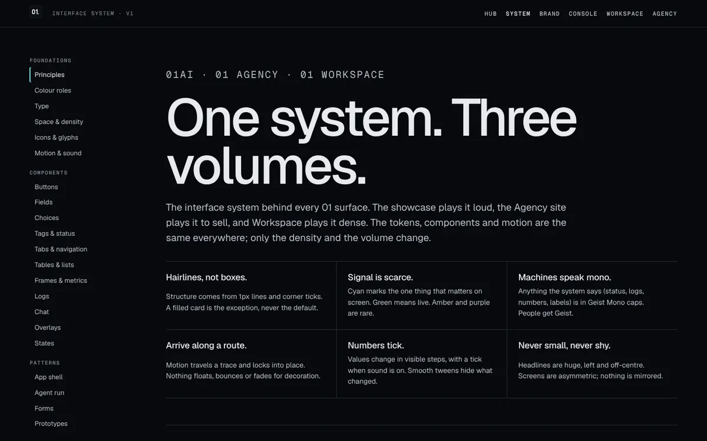
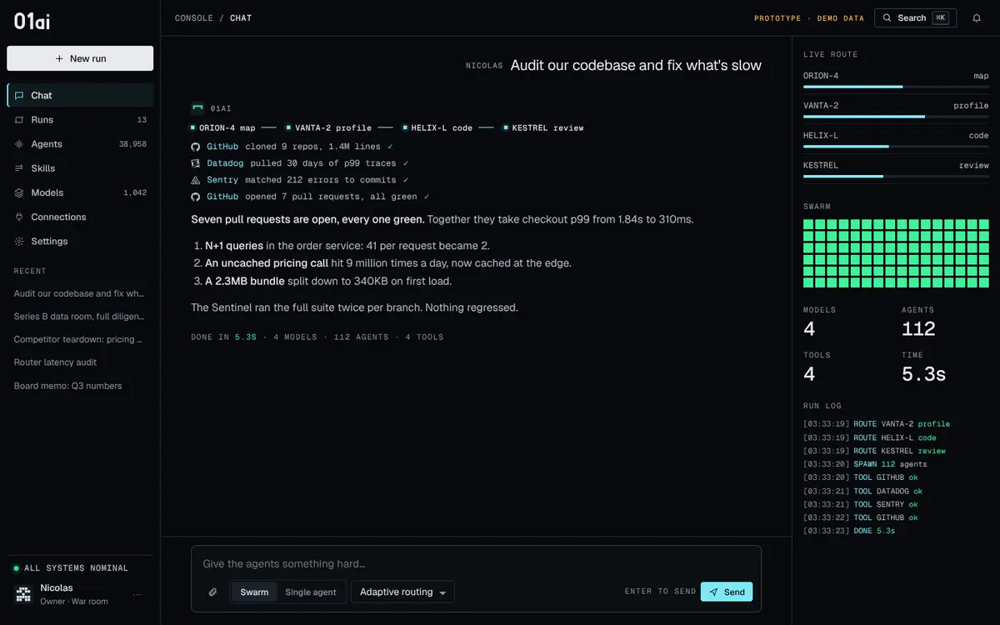
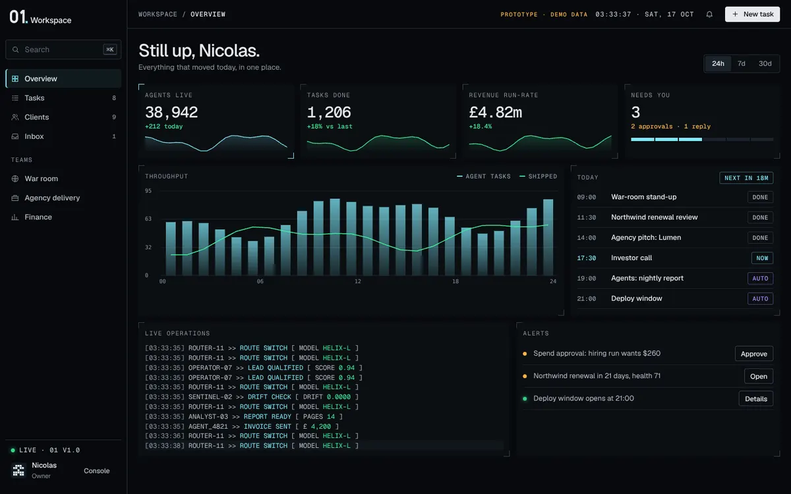
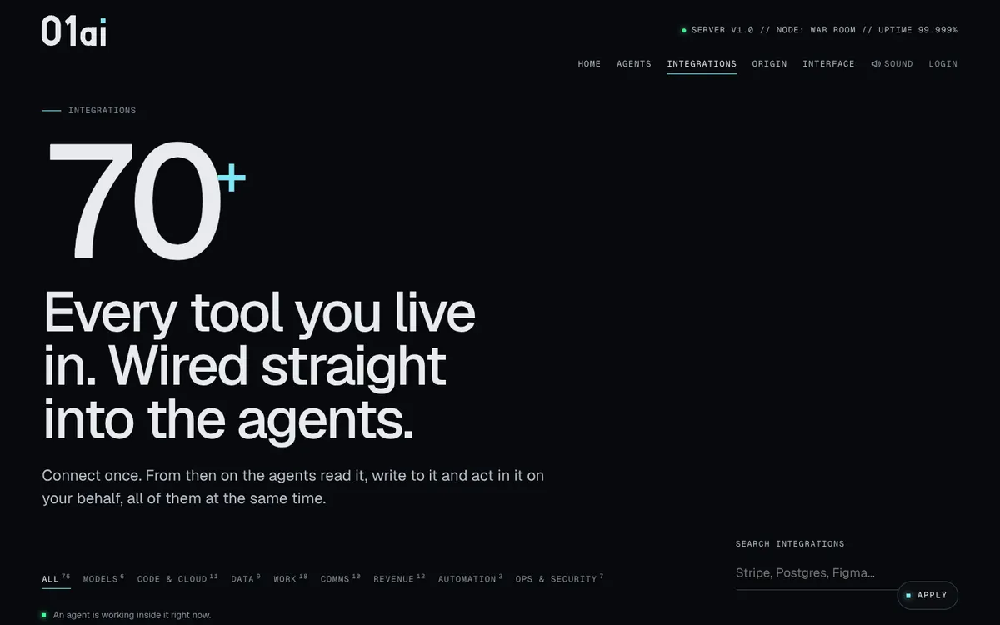
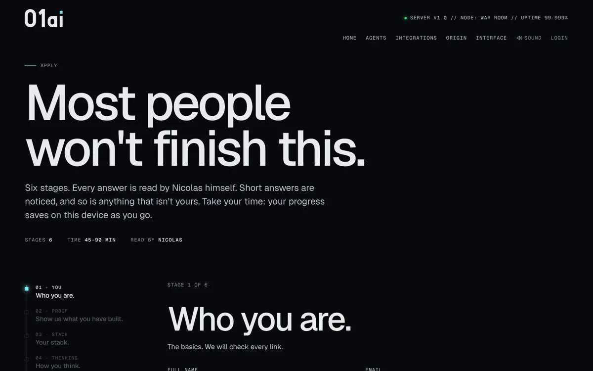
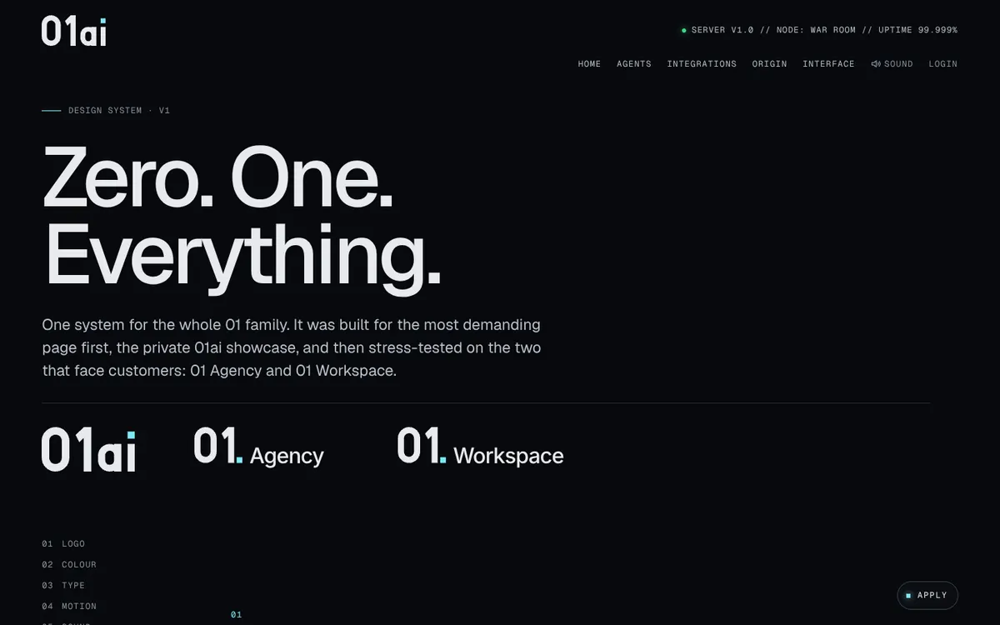

01ai, everything in one place.
Twenty home-page directions to choose from, the interface system, three product prototypes and the first pass of the site pages. Start with the directions.
This project now lives in My projects, where its hub can be edited and shared.
20 home-page directions
Working home pages, each with its own type, layout, motion and city. Shortlist your favourites, then pick the one the site gets built in.
Open the directions →Interface system and prototypes

Interface systemFoundations, components with live code, patterns.system →
01ai ConsoleChat that spawns agents, runs, models, connections, settings.prototype →
01 WorkspaceOps overview, task board, clients, agent inbox.prototype → 01 AgencyAgency site: services, work, process, brief form.prototype →
01 AgencyAgency site: services, work, process, brief form.prototype →
First-pass site pages
 HomeThe original city-circuits home page.page →
HomeThe original city-circuits home page.page → AgentsThe agent lineage, with the DNA helix.page →
AgentsThe agent lineage, with the DNA helix.page →
IntegrationsThe integration wall.page →
ApplyThe staged application.page →- OriginThe story.page →
- LoginDiscreet sign-in into the console.page →
- ChatThe public chat demo.page →

Brand bookLogo, colour, type, motion and sound.brand →